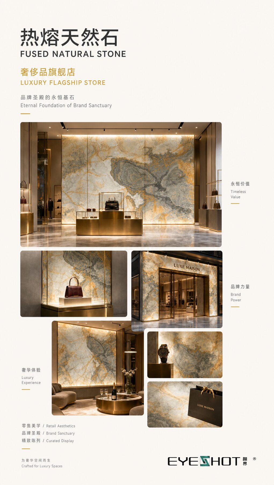

以热熔天然石连接建筑表皮、室内墙面、艺术装置与高端项目实施，让材料成为空间边界里的判断力。
把天然石的通透肌理，转译为可实施的幕墙系统

墙面、门与器物，在同一空间保持纹理、尺度与施工逻辑一致
让展墙、光影与景观外界面形成同一套材料秩序
透光墙面、背景墙与立面系统
把材料变成可选、可深化、可落地的室内部品：墙面、转角与收口在同一套施工逻辑里保持纹理与尺度一致。八大纹理系列可选，配合明框、隐框两类系统做法。
以透光天然石为门片的移门系统，一门成景
透光天然石门片搭配上滑轮吊挂系统，门片即是空间中的透光画卷。适用于卧室、书房、储物间与展示空间的分隔界面。
方寸之间，亿万年石纹诉说时光故事
集茶道体验、氛围照明与空间装饰于一体的光感器物：天然玉石提供理想摆放平台，智能触控光效一键开启，可置于茶席、案头，亦可挂于墙间。
了解热熔天然石
以自然为轴，让光影、材质与归家情绪在同一条动线上抵达
玛瑙石堡垒——珍稀材质幕墙的系统化精研
轩屏为骨，画卷为魂——一座活态山水画卷轴
整块进口玉石造 5 米幕墙，推门即是度假体验
以天然黑白根石材呈现的品牌立面（项目应用）
金镶玉社区入口，模块化发光系统
查看全部 16 个案例
发送项目阶段、空间类型与预期使用位置，我们以样板、图纸配合与工程建议回应。